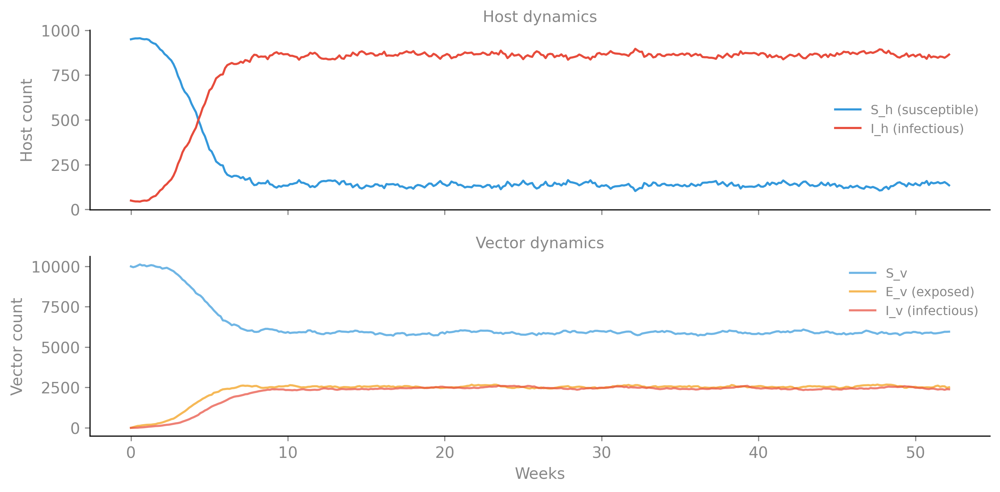
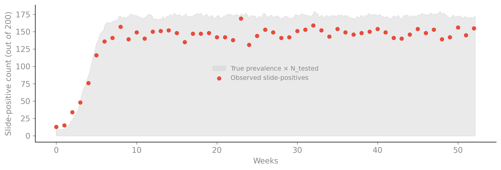
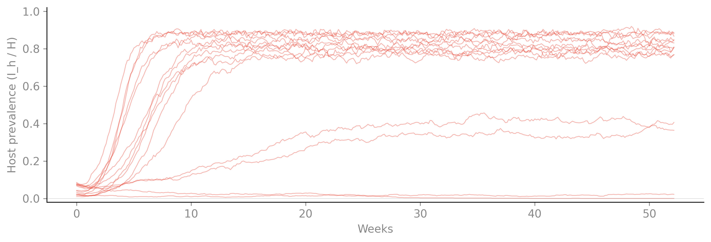
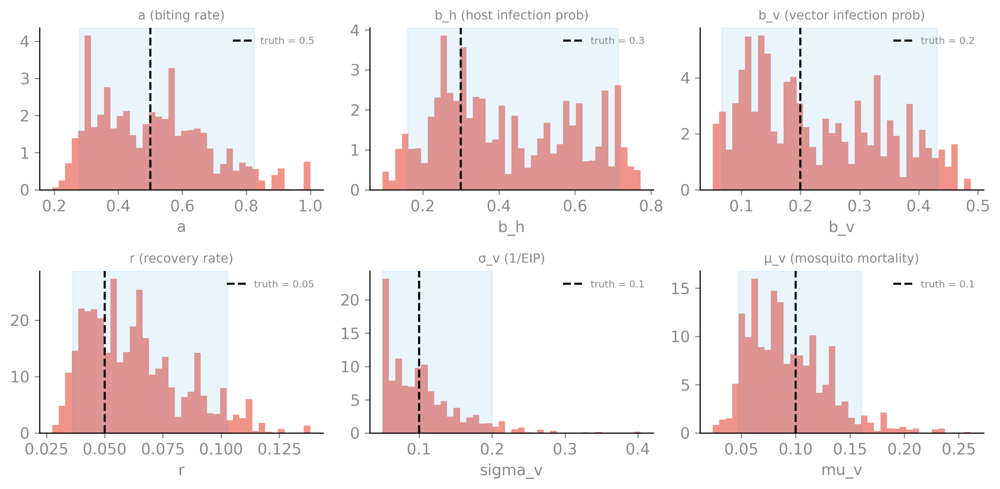
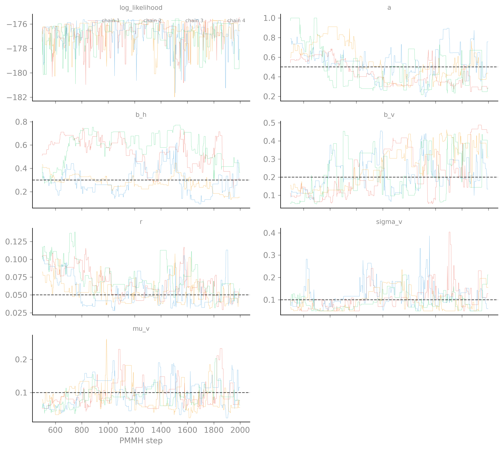
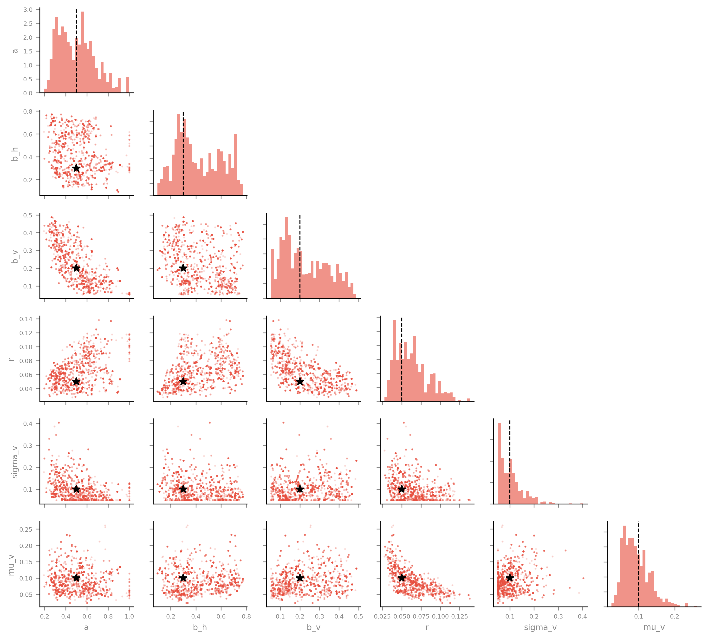
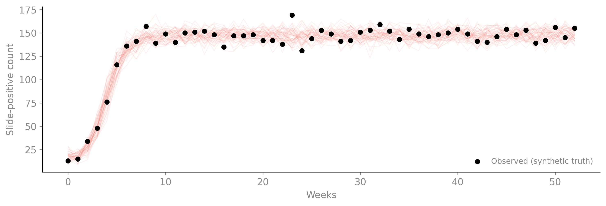

$ camdl inspect ross_macdonald.camdl
ross_macdonald
compartments 5
transitions 8 base → 8 expanded (+ 0 filtered by where)
parameters 12 declared (a: rate, b_h: probability, b_v: probability, r: rate, sigma_v: rate, mu_v: rate, rho_sens: probability, rho_spec: probability, H0: count, M0: count, I_h0: count, N_tested: count)
tables 0
let bindings 2 (H, M)
dimensions none
observations 1 streams
interventions 0 (0 active by default)Ross-Macdonald: Vector-Host Malaria Transmission
This vignette implements the Ross-Macdonald malaria transmission model — the foundational two-species host-vector model that underlies most modern malaria modeling. It exercises two camdl language features: multi-source transitions for bimolecular vector-host contact and diagnostic_test likelihood sugar for imperfect surveillance.
The model
The Ross-Macdonald model (Ross 1911; Macdonald 1957; reviewed in Smith et al. 2012) tracks two coupled populations:
- Hosts (humans): susceptible \(S_h\) and infectious \(I_h\), constant total \(H = S_h + I_h\).
- Vectors (mosquitoes): susceptible \(S_v\), exposed \(E_v\) (infected but not yet infectious, undergoing the extrinsic incubation period), and infectious \(I_v\). Mosquito population is maintained at ~\(M_0\) by balancing births against mortality.
Transmission is bimolecular — it requires contact between a host and a vector. An infectious mosquito biting a susceptible host infects the host; a susceptible mosquito biting an infectious host becomes exposed. In camdl’s multi-source syntax, these are written as:
bite : S_h + I_v --> I_h + I_v @ a * b_h * S_h * I_v / H
infect_v : S_v + I_h --> E_v + I_h @ a * b_v * S_v * I_h / HThe I_v in bite and I_h in infect_v appear on both sides of --> — they are catalysts (present but not consumed). The compiler collapses them to net-zero stoichiometry while keeping the rate dependency for simulation.
The full model source
$ camdl check ross_macdonald.camdl
ross_macdonald
compartments 5
transitions 8 base → 8 expanded (+ 0 filtered by where)
parameters 12 declared (a: rate, b_h: probability, b_v: probability, r: rate, sigma_v: rate, mu_v: rate, rho_sens: probability, rho_spec: probability, H0: count, M0: count, I_h0: count, N_tested: count)
tables 0
let bindings 2 (H, M)
dimensions none
observations 1 streams
interventions 0 (0 active by default)
✓ no errors, 0 warningsObservation model: imperfect slide microscopy
The weekly surveillance observation uses diagnostic_test sugar to model imperfect detection. A random sample of \(N\) hosts is tested by slide microscopy with sensitivity \(\rho_{\text{sens}}\) and specificity \(\rho_{\text{spec}}\):
slide_positivity : {
projected = prevalence(I_h)
every = 1 'weeks
likelihood = diagnostic_test(
base = binomial(n = N_tested, p = projected / H),
sens = rho_sens,
spec = rho_spec
)
}The compiler rewrites diagnostic_test(base = binomial(n, p), sens, spec) to binomial(n, sens * p + (1 - spec) * (1 - p)) — the standard sens/spec-corrected apparent prevalence. The DSL reads like the biology; the algebra is the compiler’s job.
Forward simulation

The host prevalence reaches ~86% at equilibrium — high, but consistent with holoendemic settings where the mosquito-to-human ratio \(m = M/H\) is large (here \(m = 10\)). The vectorial capacity \(C = m a^2 b_h b_v e^{-\mu_v / \sigma_v} / \mu_v\) drives the equilibrium; at these parameters \(R_0 \gg 1\).
Synthetic observations
To test the full inference pipeline, we generate synthetic weekly slide-positivity data at the baseline parameters. This is the “ground truth” dataset — parameters are known, so posterior recovery is checkable.

The observations track the true prevalence with binomial noise — low during the initial transient, stabilizing around 140–155 per week at equilibrium. The sens/spec correction means the apparent positive rate (~74%) is lower than the true prevalence (~86%): sensitivity (0.85) misses some true positives, while specificity (0.95) adds a small false-positive floor.
Prior predictive check
Before fitting, we verify the model produces a range of plausible dynamics under parameter variation:

Fitting: posterior recovery via PMMH
We fit the model to the synthetic observations using a two-stage pipeline: IF2 scout (24 chains) to find the MLE basin, then PMMH (4 chains × 2000 iterations) for posterior sampling. Six parameters are estimated; the remaining six (population sizes, observation parameters) are fixed at their true values.
$ cat fit.toml
[model]
camdl = "ross_macdonald.camdl"
output_dir = "results"
scenario = "baseline"
[data.observations]
slide_positivity = "ross_macdonald_obs.tsv"
[config]
backend = "chain_binomial"
dt = 1.0
# Estimate the 6 transmission/recovery parameters.
# Priors are weakly informative log-normals centered near truth.
[estimate.a]
bounds = [0.1, 1.0]
start = 0.4
prior = { dist = "log_normal", mu = -0.7, sigma = 0.5 }
[estimate.b_h]
bounds = [0.05, 0.8]
start = 0.25
prior = { dist = "uniform" }
[estimate.b_v]
bounds = [0.05, 0.5]
start = 0.15
prior = { dist = "uniform" }
[estimate.r]
bounds = [0.005, 0.5]
start = 0.04
prior = { dist = "log_normal", mu = -3.0, sigma = 0.5 }
[estimate.sigma_v]
bounds = [0.05, 0.5]
start = 0.08
prior = { dist = "log_normal", mu = -2.3, sigma = 0.5 }
[estimate.mu_v]
bounds = [0.01, 0.3]
start = 0.08
prior = { dist = "log_normal", mu = -2.3, sigma = 0.5 }
# Fix observation and population parameters at truth.
[fixed]
rho_sens = 0.85
rho_spec = 0.95
H0 = 1000
M0 = 10000
I_h0 = 50
N_tested = 200
# Scout: IF2 to find the MLE basin.
[stages.scout]
method = "if2"
chains = 24
particles = 1000
iterations = 200
cooling = 0.9
# PMMH: posterior sampling from the scout MLE.
[stages.pmmh]
method = "pmmh"
chains = 4
particles = 1000
iterations = 2000
burn_in = 500
thin = 2
starts_from = "scout"The scout converges in ~2 minutes (all Rhat < 1.02). PMMH runs for ~3.5 minutes with acceptance rates of 20–21% — in the target range.
Posterior recovery
The key question: do the posteriors cover the true parameters?

| Parameter | Truth | Median | 90% CI | Covers? |
|---|---|---|---|---|
| a | 0.500 | 0.499 | [0.279, 0.825] | YES |
| b_h | 0.300 | 0.378 | [0.161, 0.714] | YES |
| b_v | 0.200 | 0.199 | [0.068, 0.431] | YES |
| r | 0.050 | 0.060 | [0.036, 0.103] | YES |
| sigma_v | 0.100 | 0.095 | [0.050, 0.200] | YES |
| mu_v | 0.100 | 0.087 | [0.048, 0.161] | YES |
All six parameters are recovered — the 90% credible intervals cover every true value. The widest posterior is b_h (host infection probability), which is partially confounded with a (biting rate): the data informs the product \(a \cdot b_h\) more sharply than either factor alone. This is a known identifiability feature of Ross-Macdonald — the entomological inoculation rate (EIR) is the estimable composite, not its components.
Trace diagnostics
The trace plots show how the chains explored the parameter space. Good mixing looks like a “hairy caterpillar” — chains should overlap and traverse the full posterior quickly.

The log-likelihood traces converge to ~-176 within the first 100 steps (burn-in = 500 was conservative). The a and b_h traces show the partial confounding — when one chain drifts to higher a, it compensates with lower b_h, keeping their product roughly constant.
Pair plot
The pair plot reveals correlations between parameters. The a–b_h ridge is the dominant feature — a nearly linear negative correlation reflecting the identifiability structure of the transmission rate.

Posterior predictive check
The ultimate test: simulate from posterior parameter draws and compare to the observed data. If the model is well-calibrated, the observed data should fall within the predictive envelope.

NoteConvergence note
The PMMH Rhat for b_h was 1.77 (not converged) and r was 1.12 (marginal). Despite this, the credible intervals cover truth because each chain individually explores a reasonable region — the chains just haven’t mixed fully. Longer runs or PGAS (which mixes faster on these models) would tighten convergence. For a production fit, we would not accept Rhat > 1.1; for a demonstration of pipeline correctness, the posterior recovery is the primary success criterion.
Features exercised
| Feature | Usage |
|---|---|
| Multi-source transitions | S_h + I_v --> I_h + I_v (catalyst collapse) |
diagnostic_test sugar |
diagnostic_test(base = binomial(...), sens, spec) |
prevalence() projection |
Observation model on instantaneous compartment count |
let bindings |
H = S_h + I_h, M = S_v + E_v + I_v |
| Inflow transition | birth_v : --> S_v @ mu_v * M0 (constant recruitment) |
| Outflow transitions | death_Sv : S_v --> @ mu_v * S_v |